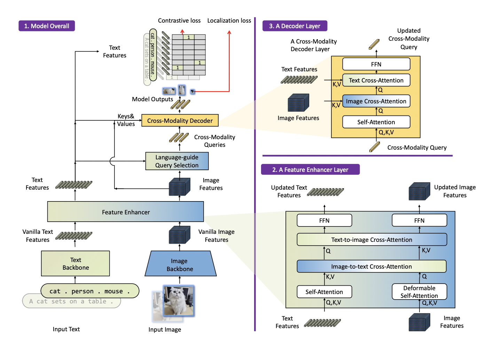
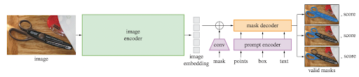
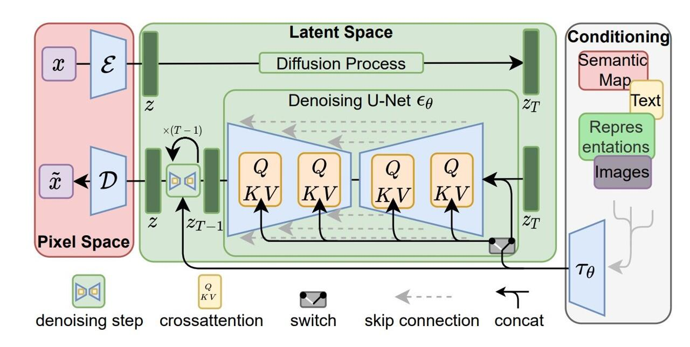
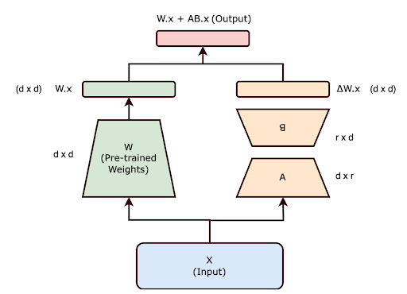
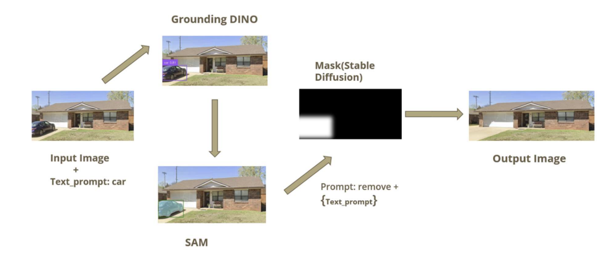
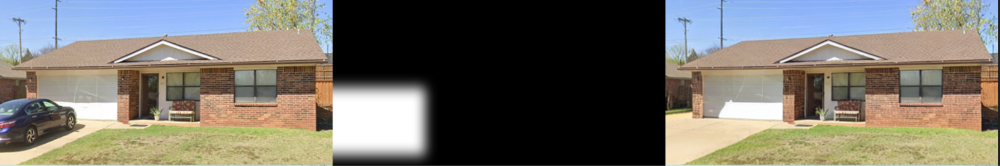
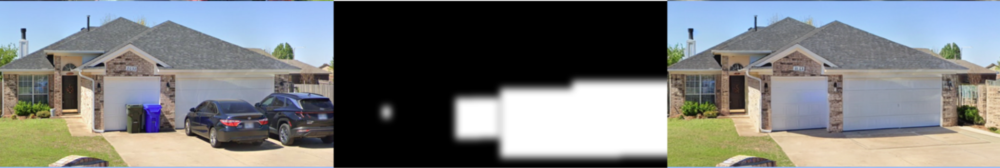
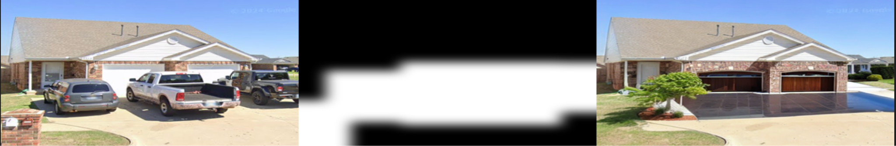
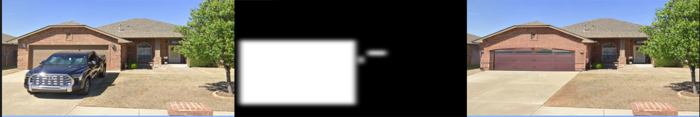

Harsha Rapuru, Hareen Sai Vattikuti
Image editing, particularly the removal of unwanted objects such as crowds, animals, watermarks, or timestamps, is a common but highly tedious task. Traditionally, users manually create masks to isolate and remove these unwanted elements, which becomes increasingly cumbersome when dealing with complex scenes containing numerous or intricately shaped objects. Automating this process through intuitive, text-based commands—for example, simply instructing a tool to "remove people from the background"—could vastly streamline and accelerate the editing workflow, transforming a previously labor-intensive process into an effortless user interaction.
Current image editing software predominantly relies on manual masking techniques, which become impractical when dealing with multiple or intricate objects. This manual process is not only tedious and time-consuming but also prone to human error, often leading to inaccuracies and suboptimal visual results. While some automated solutions exist, they frequently lack user-friendly natural language command interfaces. This limitation significantly restricts accessibility and usability for non-expert users who may prefer to express editing commands intuitively, rather than through complex graphical tools or detailed manual mask generation.
Our primary goal is to develop an automated and intuitive image-editing tool that leverages natural language text prompts to facilitate object removal. By enabling users to simply describe the objects they wish to remove—such as "remove the crowd from the beach"—the tool precisely identifies and generates accurate masks around the specified items
Beyond precise identification, the solution aims to seamlessly restore the background, generating realistic content that blends naturally with the surrounding area. This ensures the edited images maintain visual coherence and authenticity without noticeable traces of object removal. Ultimately, our approach seeks to significantly enhance efficiency, accuracy, and accessibility compared to traditional manual editing methods, empowering both expert designers and casual users to perform advanced image edits with ease and confidence.
A prominent advancement in the field of intuitive image editing is InstructPix2Pix, a model designed to perform complex image manipulations guided by natural language instructions. InstructPix2Pix effectively bridges the gap between textual prompts and image editing, enabling users to issue simple, descriptive commands such as "remove the dog from the picture" or "change the shirt color to blue." Leveraging the power of generative models and transformer-based architectures, this approach significantly reduces the complexity involved in image editing tasks. It has demonstrated great potential in providing accessible, efficient, and user-friendly image manipulation capabilities, paving the way for further research and innovation in automated image editing through text-based interactions.
To realize our goal of intuitive and precise object removal, our approach integrates several powerful AI models, each addressing specific stages of the image editing process:
Grounding DINO is an advanced zero-shot object detection model designed for precise vision-language grounding. By interpreting natural language text prompts, Grounding DINO accurately identifies and localizes the targeted objects within an image, significantly streamlining the identification phase without manual labeling.

Figure: Grounding Dino Architecture.
SAM is a state-of-the-art segmentation model capable of accurately segmenting virtually any object within diverse images. Working in close integration with Grounding DINO, SAM generates detailed and precise segmentation masks around identified objects, ensuring clean and accurate isolation for subsequent removal steps.

Figure: Segnment Anything Model Architecture.
Stable Diffusion, a cutting-edge generative diffusion model, excels in realistic image inpainting. It intelligently reconstructs removed regions by comprehensively understanding surrounding context and texture continuity, resulting in seamless and visually coherent backgrounds.

Figure: Stable Diffusion Architecture.
LoRA provides a highly efficient method for fine-tuning Stable Diffusion by modifying only a minimal subset of the model parameters. This targeted approach allows quick adaptation of the model to specialized or domain-specific tasks, substantially improving generative accuracy and ensuring better alignment with user prompts— all without needing extensive retraining of the entire model.

Figure: Low-Rank Adaptation Architecture

Figure: Step-by-step workflow of the proposed object removal pipeline.

Prompt: Remove car

Prompt: Remove cars and trashcans

Prompt: Remove cars and trucks

Prompt: Remove car
| Metric | InstructPix2Pix | Stable Diffusion | Stable Diffusion + LoRA |
|---|---|---|---|
| SSIM | 0.4847 | 0.6498 | 0.5393 |
| LPIPS | 0.2449 | 0.1184 | 0.1781 |
The reduction in similarity observed with Stable Diffusion and LoRA fine-tuning can be attributed to the model generating alternative backgrounds or entirely replacing objects. This behavior is likely due to the limited number of samples used during the fine-tuning process.
Despite significant advancements, our approach faces certain limitations. Accurately reconstructing intricate textures or structurally complex backgrounds remains challenging; at times, this can lead to outputs that appear blurry or less realistic. Additionally, removing objects with reflective, transparent, or partially occluded features may leave noticeable artifacts, residual shadows, or inconsistent lighting, diminishing overall visual realism.
Another critical constraint involves processing efficiency. As image resolution or scene complexity increases, processing times become significantly longer. This limitation currently hinders our method’s suitability for real-time applications without further optimization and performance improvements. Addressing these limitations will be vital for future development and broader practical adoption
In this project, we successfully developed a robust, intuitive system capable of automating object removal from images through simple natural-language text commands, significantly streamlining and simplifying the image editing process. By integrating advanced segmentation capabilities (Grounded SAM) and state-of-the-art generative inpainting (Stable Diffusion), further refined through efficient LoRA-based fine-tuning, our model consistently produced seamless, realistic, and contextually coherent results.
Through rigorous quantitative evaluations using metrics such as SSIM and LPIPS, alongside user assessments, our approach demonstrated substantial improvements in usability, accuracy, and processing efficiency compared to traditional manual masking methods. This advancement not only makes sophisticated image editing accessible to non-expert users but also lays a strong foundation for further innovations in AI-driven image manipulation workflows.
Building upon the advancements achieved in our current approach, several exciting avenues remain for future exploration. Firstly, enhancing our model to better handle simultaneous removal of multiple objects is crucial. Developing techniques that precisely segment and realistically inpaint numerous objects in complex scenes will significantly broaden the usability and versatility of our tool.
Additionally, improving performance under challenging conditions—such as images with significant occlusion, poor lighting, or intricate backgrounds—will be essential to achieve consistently realistic and high-quality results. Further refinement of generative and segmentation methods can help overcome these real-world constraints.
Lastly, extending our system's capabilities to support video-based object removal represents a promising direction for dynamic content editing. Adapting our model for seamless and temporally consistent edits in video would greatly enhance its practical application, paving the way toward comprehensive multimedia editing solutions.
Harsha Rapuru — Masters in Data Science, Texas A and M University
Hareen Sai Vattikuti — Masters in Data Science, Texas A and M University